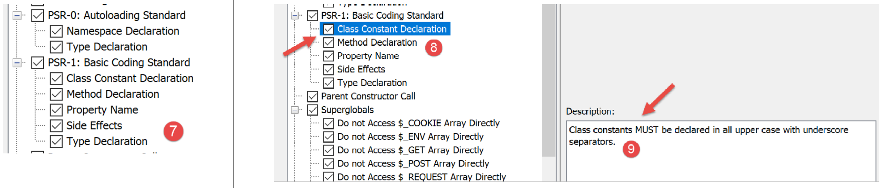

3. Die Grundlagen von PHP
3.1. Die Verzeichnisstruktur der Skripte

3.2. PHP-Konfiguration
PHP wird über eine Textdatei [php.ini] vorkonfiguriert. Alle diese Einstellungen können programmgesteuert geändert werden. Die PHP-Konfiguration hat großen Einfluss auf die Skriptausführung. Es ist daher wichtig, sie zu verstehen. Das folgende Skript [phpinfo.php] ermöglicht Ihnen dies:
Kommentare
- Zeile 3: Die Funktion [phpinfo] zeigt die PHP-Konfiguration an;
Ausführungsergebnisse
Die Funktion [phpinfo] zeigt hier über 800 Konfigurationszeilen an. Wir werden nicht näher darauf eingehen, da die meisten davon die fortgeschrittene Nutzung von PHP betreffen. Eine wichtige Zeile ist Zeile 13 oben: Sie gibt an, welche [php.ini]-Datei zur Konfiguration des PHP verwendet wurde, mit dem Sie Ihre Skripte ausführen. Wenn Sie die PHP-Laufzeitkonfiguration ändern möchten, müssen Sie diese Datei bearbeiten. In dieser Datei finden sich viele Kommentare, die die Rolle der verschiedenen Einstellungen erläutern.
3.3. Ein erstes Beispiel
3.3.1. Der Code
Unten finden Sie ein Programm [bases-01.php], das die grundlegenden Funktionen von PHP demonstriert.
<?php
// this is a comment
// variable used without being declared
$nom = "dupont";
// a screen display
print "nom=$nom\n";
// an array with elements of different types
$tableau = array("un", "deux", 3, 4);
// its number of elements
$n = count($tableau);
// a loop
for ($i = 0; $i < $n; $i++) {
print "tableau[$i]=$tableau[$i]\n";
}
// initialize 2 variables with the contents of an array
list($chaine1, $chaine2) = array("chaine1", "chaine2");
// concatenation of the 2 strings
$chaine3 = $chaine1 . $chaine2;
// result display
print "[$chaine1,$chaine2,$chaine3]\n";
// use function
affiche($chaine1);
// the type of a variable can be known
afficheType("n", $n);
afficheType("chaine1", $chaine1);
afficheType("tableau", $tableau);
// the type of a variable can change at runtime
$n = "a changé";
afficheType("n", $n);
// a function can return a result
$res1 = f1(4);
print "res1=$res1\n";
// a function can render a table of values
list($res1, $res2, $res3) = f2();
print "(res1,res2,res3)=[$res1,$res2,$res3]\n";
// we could have retrieved these values in a table
$t = f2();
for ($i = 0; $i < count($t); $i++) {
print "t[$i]=$t[$i]\n";
}
// testing
for ($i = 0; $i < count($t); $i++) {
// displays only channels
if (getType($t[$i]) === "string") {
print "t[$i]=$t[$i]\n";
}
}
// == and === comparison operators
if("2"==2){
print "avec l'opérateur ==, la chaîne 2 est égale à l'entier 2\n";
}else{
print "avec l'opérateur ==, la chaîne 2 n'est pas égale à l'entier 2\n";
}
if("2"===2){
print "avec l'opérateur ===, la chaîne 2 est égale à l'entier 2\n";
}
else{
print "avec l'opérateur ===, la chaîne 2 n'est pas égale à l'entier 2\n";
}
// other tests
for ($i = 0; $i < count($t); $i++) {
// displays only integers >10
if (getType($t[$i]) === "integer" and $t[$i] > 10) {
print "t[$i]=$t[$i]\n";
}
}
// a while loop
$t = [8, 5, 0, -2, 3, 4];
$i = 0;
$somme = 0;
while ($i < count($t) and $t[$i] > 0) {
print "t[$i]=$t[$i]\n";
$somme += $t[$i]; //$somme=$somme+$t[$i]
$i++; //$i=$i+1
}//while
print "somme=$somme\n";
// end of program
exit;
//----------------------------------
function affiche($chaine) {
// displays $chaine
print "chaine=$chaine\n";
}
//poster
//----------------------------------
function afficheType($name, $variable) {
// displays the type of $variable
print "type[variable $" . $name . "]=" . getType($variable) . "\n";
}
//afficheType
//----------------------------------
function f1($param) {
// adds 10 to $param
return $param + 10;
}
//----------------------------------
function f2() {
// returns 3 values
return array("un", 0, 100);
}
?>
Die Ergebnisse:
nom=dupont
tableau[0]=un
tableau[1]=deux
tableau[2]=3
tableau[3]=4
[chaine1,chaine2,chaine1chaine2]
chaine=chaine1
type[variable $n]=integer
type[variable $chaine1]=string
type[variable $tableau]=array
type[variable $n]=string
res1=14
(res1,res2,res3)=[un,0,100]
t[0]=un
t[1]=0
t[2]=100
t[0]=un
avec l'opérateur ==, la chaîne 2 est égale à l'entier 2
avec l'opérateur ===, la chaîne 2 n'est pas égale à l'entier 2
t[2]=100
t[0]=8
t[1]=5
somme=13
Kommentare
- Zeile 5: In PHP werden Variablentypen nicht deklariert. Variablen haben einen dynamischen Typ, der sich im Laufe der Zeit ändern kann. $name steht für die Variable mit dem Bezeichner name;
- Zeile 7: Um eine Ausgabe auf dem Bildschirm anzuzeigen, können Sie die Anweisung print oder die Anweisung echo verwenden;
- Zeile 9: Das Schlüsselwort „array“ wird verwendet, um ein Array zu definieren. Die Variable $name[$i] steht für das $i-te Element des Arrays $array;
- Zeile 11: Die Funktion `count($tableau)` gibt die Anzahl der Elemente im Array `$tableau` zurück;
- Zeilen 13–15: eine Schleife. Da diese Schleife nur eine Anweisung enthält, sind geschweifte Klammern optional. Im weiteren Verlauf dieses Dokuments werden wir unabhängig von der Anzahl der Anweisungen immer geschweifte Klammern verwenden;
- Zeile 14: Zeichenfolgen werden in doppelte Anführungszeichen " oder einfache Anführungszeichen ' gesetzt. Innerhalb doppelter Anführungszeichen werden die Variablen $variable ausgewertet, innerhalb einfacher Anführungszeichen jedoch nicht;
- Zeile 17: Mit der Listenfunktion können Sie Variablen in einer Liste gruppieren und ihnen mit einer einzigen Zuweisungsoperation einen Wert zuweisen. Hier gilt $chaine1="chaine1" und $chaine2="chaine2";
- Zeile 19: Der Operator . ist der Operator zur Zeichenfolgenverkettung;
- Zeilen 83–86: Das Schlüsselwort `function` definiert eine Funktion. Eine Funktion kann mit der Anweisung `return` Werte zurückgeben oder auch nicht. Der aufrufende Code kann die Ergebnisse einer Funktion ignorieren oder abrufen. Eine Funktion kann an beliebiger Stelle im Code definiert werden.
- Zeile 92: Die vordefinierte Funktion `getType($variable)` gibt eine Zeichenkette zurück, die den Typ von `$variable` angibt. Dieser Typ kann sich im Laufe der Zeit ändern;
- Zeile 45: Der Operator === führt einen strengen Vergleich zweier Elemente durch: Sie müssen vom gleichen Typ sein, um verglichen zu werden. Der Operator == ist weniger streng: Zwei Elemente können gleich sein, ohne vom gleichen Typ zu sein. Dies wird durch die Anweisungen in den Zeilen 50–60 veranschaulicht. Im Fall des Operators == wird der Vergleich durchgeführt, nachdem beide zu vergleichenden Elemente in denselben Typ umgewandelt wurden. Dabei finden implizite Konvertierungen statt. Es passiert leicht, diese impliziten Konvertierungen zu „vergessen“ und somit unerwartete Ergebnisse zu erhalten, wie zum Beispiel die Feststellung, dass eine Bedingung wahr ist, obwohl man erwartet hatte, dass sie falsch ist. Um diese Falle zu vermeiden, werden wir systematisch den Vergleichsoperator === verwenden;
- Zeile 64: Sie können auch die booleschen Operatoren „and“ und „!“ verwenden;
- Zeile 69: Anstelle der array()-Notation können Sie in PHP 7 die []-Notation verwenden, um ein Array zu initialisieren;
- Zeile 80: Die vordefinierte Funktion exit beendet die Ausführung des Skripts;
- Zeile 107: Das ?>-Tag markiert das Ende des PHP-Skripts. Es ist nicht zwingend erforderlich. Darüber hinaus kann es im Webkontext zu Problemen führen, wenn ihm Leerzeichen oder Zeilenumbrüche folgen, die schwer zu erkennen sind, da sie in einem Texteditor nicht sichtbar sind. Daher werden wir dieses Tag im weiteren Verlauf dieses Dokuments konsequent weglassen;
Hinweis: In diesem Dokument verwenden wir das Schlüsselwort [print], um Text auf der Konsole anzuzeigen. Eine andere Möglichkeit, dasselbe zu erreichen, ist die Verwendung des Schlüsselworts [echo]. Es gibt feine Unterschiede zwischen diesen beiden Schlüsselwörtern, aber im Kontext dieses Dokuments spielen diese keine Rolle. Wenn Sie also [echo] bevorzugen, können Sie dies gerne tun.
3.3.2. Verwendung von NetBeans
NetBeans gibt verschiedene Warnungen aus, die es wert sind, überprüft zu werden. Nehmen wir das Beispiel des Skripts [bases-01.php]:

In Zeile 5 gibt NetBeans eine Warnung aus, dass die Datei nicht der PSR-1-Empfehlung (PHP Standard Recommendations No. 1) entspricht. PSRs sind Empfehlungen zur Erstellung von Standardcode, um die Interoperabilität und Wartung von Code zu erleichtern, der von verschiedenen Personen geschrieben wurde. Es kann ärgerlich sein, Warnungen zu erhalten, wenn Sie bewusst gegen die Standards verstoßen möchten, beispielsweise weil das Projektteam andere Standards verwendet. Was Sie mit NetBeans überprüfen möchten und was nicht, ist konfigurierbar:

- In [5] finden Sie die Elemente, die Sie mit NetBeans überprüfen möchten;
- in [6] die Schwereklasse, die dem von NetBeans gemeldeten Fehler zugewiesen wurde;

In [7] sehen Sie, dass wir die Überprüfung beantragt haben, ob der Code den Empfehlungen von PSR-0 und PSR-1 entspricht. Nichts davon ist zwingend vorgeschrieben. Beim Erlernen der Sprache ist es ratsam, so viele der von NetBeans angebotenen Optionen wie möglich zu prüfen. Auf diese Weise lernen Sie viel dazu. Anschließend können Sie diese NetBeans-Prüfungen an die Codierungsstandards Ihres Projektteams anpassen.
Werfen wir einen Blick auf die PSR-1-Codierungsstandards [8, 9]:
Option | Prüfung |
| Klassenkonstanten MÜSSEN in Großbuchstaben mit Unterstrichen als Trennzeichen deklariert werden. Beispiel: const TAUX_TVA |
| Methodennamen MÜSSEN in CamelCase() deklariert werden. Beispiel: public function executeBatchTaxes{} |
| Eigenschaftsnamen SOLLTEN im Format $StudlyCaps, $camelCase oder $under_score deklariert werden (innerhalb eines Geltungsbereichs einheitlich) Beispiel: public AnnualSalary (StudlyCaps), public annualSalary (camelCase), public annual_salary (Unterstrich) |
| Eine Datei SOLLTE entweder neue Symbole deklarieren und keine anderen Nebenwirkungen verursachen, oder sie SOLLTE Logik mit Nebenwirkungen ausführen, aber sie SOLLTE NICHT beides tun. |
| Typnamen MÜSSEN in StudlyCaps deklariert werden (Code, der für 5.2.x und früher geschrieben wurde, SOLLTE die Pseudonamespacing-Konvention mit Vendor_-Präfixen für Typnamen verwenden). Jeder Typ befindet sich in einer eigenen Datei und in einem Namespace mit mindestens einer Ebene: einem Vendor-Namen auf oberster Ebene. Beispiel: class ScholarshipStudent {} |
Die PSR-1/4-Empfehlung besagt, dass eine PHP-Datei Folgendes enthalten muss:
- entweder eine Typdeklaration (Klassen, Schnittstellen);
- oder ausführbaren Code ohne Deklarationen neuer Typen;
Es gibt weitere PHP-Empfehlungen, die von NetBeans nicht durchgesetzt werden: PSR-3, PSR-4, PSR-6, PSR-7 und PSR-13.
Der Einfachheit halber entsprechen nicht alle Beispiele in diesem Dokument der PSR-1-Empfehlung, da dies eine Aufteilung des Klassen- und Schnittstellencodes in separate Dateien erfordern würde, was für einfache Beispiele zu aufwendig ist. Es ist daher einfacher, alles in einer einzigen Datei unterzubringen. Bei der Beispielanwendung, die als zentrales Thema dieses Dokuments vorgestellt wird, haben wir uns bemüht, die PSR-1-Empfehlung so genau wie möglich zu befolgen.
Einige NetBeans-Warnungen weisen auf einen möglichen Fehler hin:

Die Warnung [Uninitialized Variables] weist auf einen wahrscheinlichen Fehler hin, oft auf einen Tippfehler im Variablennamen. Dasselbe gilt für die Warnung [Unused Variables].
Schließlich wird empfohlen, alle NetBeans-Warnungen zu überprüfen, die durch ein Banner am linken Rand des Codes und einen gelben Strich am rechten Rand angezeigt werden:


3.4. Variablenbereich
3.4.1. Beispiel 1
Das Skript [bases-02.php] lautet wie folgt:
<?php
// variable scope
function f1() {
// we use the global variable $i
global $i;
$i++;
$j = 10;
print "f1[i,j]=[$i,$j]\n";
}
function f2() {
// we use the global variable $i
global $i;
$i++;
$j = 20;
print "f2[i,j]=[$i,$j]\n";
}
function f3() {
// we use a local variable $i
$i = 4;
$j = 30;
print "f3[i,j]=[$i,$j]\n";
}
// tests
$i = 0;
$j = 0; // these two variables are known only to a function f
// only if it explicitly declares with the global instruction
// she wants to use them
f1();
f2();
f3();
print "test[i,j]=[$i,$j]\n";
Die Ergebnisse:
Kommentare
- Zeilen 29–30: Definieren Sie zwei Variablen, $i und $j, im Hauptprogramm. Diese Variablen sind innerhalb der Funktionen nicht bekannt. Daher ist in Zeile 9 die Variable $j in der Funktion f1 eine lokale Variable der Funktion f1 und unterscheidet sich von der Variable $j im Hauptprogramm. Eine Funktion kann mit dem Schlüsselwort global auf eine Variable $variable im Hauptprogramm zugreifen;
- In Zeile 7 bezieht sich die Anweisung auf die globale Variable $i des Hauptprogramms;
3.4.2. Beispiel 3
Das Skript [bases-03.php] lautet wie folgt:
<?php
// the scope of a variable is global to code blocks
$i = 0; {
$i = 4;
$i++;
}
print "i=$i\n";
Die Ergebnisse:
Kommentare
In einigen Sprachen hat eine innerhalb von geschweiften Klammern definierte Variable den Geltungsbereich dieser Klammern: Außerhalb dieser Klammern ist sie nicht bekannt. Die obigen Ergebnisse zeigen, dass dies in PHP nicht der Fall ist. Die in Zeile 5 innerhalb der geschweiften Klammern definierte Variable $i ist dieselbe wie die in den Zeilen 4 und 8 außerhalb der Klammern verwendete.
3.5. Typänderungen
Variablen in PHP haben keinen festen Typ. Ihr Typ kann sich während der Ausführung ändern, je nachdem, welcher Wert der Variablen zugewiesen wird. Bei Operationen mit Daten verschiedener Typen führt der PHP-Interpreter implizite Konvertierungen durch, um die Operanden auf einen gemeinsamen Typ zu bringen. Diese impliziten Konvertierungen können, wenn sie dem Entwickler nicht bekannt sind, eine Quelle für schwer zu erkennende Fehler sein. Nachfolgend finden Sie ein Skript [bases-04.php], das implizite und explizite Konvertierungen demonstriert:
<?php
// strict types for passing parameters
declare(strict_types=1);
// implicit type changes
// type -->bool
print "Conversion vers un booléen------------------------------\n";
showBool("abcd", "abcd");
showBool("", "");
showBool("[1, 2, 3]", [1, 2, 3]);
showBool("[]", []);
showBool("NULL", NULL);
showBool("0.0", 0.0);
showBool("0", 0);
showBool("4.6", 4.6);
function showBool(string $prefixe, $var) : void {
print "(bool) $prefixe : ";
// conversion of $var to Boolean is automatic in the following test
if ($var) {
print "true";
} else {
print "false";
}
print "\n";
}
Kommentare
- Zeile 4: Erfordert eine strenge Typprüfung der Parameter einer Funktion, wenn angegeben;
- Zeile 18: Die Funktion [showBool] soll die implizite (automatische) Konvertierung demonstrieren, die der PHP-Interpreter durchführt, wenn ein Wert beliebigen Typs in einen booleschen Wert konvertiert werden muss (Zeile 21);
- Zeile 18: Dem Parameter $var ist kein Typ zugewiesen. Der tatsächliche Parameter kann daher von beliebigem Typ sein. Der Parameter $prefix hingegen muss vom Typ string sein. Die Funktion showBool gibt keinen Wert zurück (void);
- Zeile 21: In der Anweisung if($var) muss der Wert von $var in einen booleschen Wert konvertiert werden, damit die if-Anweisung ausgewertet werden kann. Überraschenderweise hat der PHP-Interpreter für jeden ihm übergebenen Wertestyp eine Lösung;
- Zeilen 9–16: Der Wert des Parameters der Funktion [showBool] ist nacheinander:
- Zeile 9: eine nicht leere Zeichenkette: Ergebnis TRUE (Groß-/Kleinschreibung spielt keine Rolle, TRUE=true);
- Zeile 10: eine leere Zeichenkette: Ergebnis FALSE;
- Zeile 11: ein nicht leeres Array: Ergebnis TRUE;
- Zeile 12: ein leeres Array: Ergebnis FALSE;
- Zeile 14: die reelle Zahl 0: Ergebnis FALSE;
- Zeile 15: die ganze Zahl 0: Ergebnis FALSE;
- Zeile 16: eine reelle Zahl (oder ganze Zahl) ungleich 0: Ergebnis TRUE;
Das wird auf dem Bildschirm angezeigt:
Conversion vers un booléen------------------------------
(bool) abcd : true
(bool) : false
(bool) [1, 2, 3] : true
(bool) [] : false
(bool) NULL : false
(bool) 0.0 : false
(bool) 0 : false
(bool) 4.6 : true
Fahren wir mit dem Skriptcode fort:
//
// implicit changes from string type to numeric type
// string --> number
print "Conversion chaîne vers nombre------------------------------\n";
showNumber("12");
showNumber("45.67");
showNumber("abcd");
function showNumber(string $var) : void {
$nombre = $var + 1;
var_dump($nombre);
print "($var): $nombre\n";
}
Kommentare
- Zeile 9: Die Funktion [showNumber] nimmt einen String-Parameter entgegen und gibt kein Ergebnis zurück (void);
- Zeile 10: Dieser Parameter wird in einer arithmetischen Operation verwendet, was den PHP-Interpreter dazu zwingt, zu versuchen, $var in eine Zahl zu konvertieren;
- Zeile 5: konvertiert die Zeichenkette „12“ in die Ganzzahl 12;
- Zeile 6: konvertiert die Zeichenkette „45.67“ in die Gleitkommazahl 45.67;
- Zeile 7: gibt eine Warnung aus, konvertiert aber dennoch die Zeichenkette „abcd“ in die Zahl 0;
Hier sind die Ergebnisse der Ausführung:
Fahren wir mit dem Skriptcode fort:
// changements explicites de type
// vers int
showInt("12.45");
showInt(67.8);
showInt(TRUE);
showInt(NULL);
function showInt($var) : void {
print "paramètre : ";
var_dump($var);
print "\n";
print "résultat de la conversion : ";
var_dump((int) $var);
print "\n";
}
Kommentare
- Zeile 21: Die Funktion [showInt] nimmt einen Parameter beliebigen Typs entgegen und gibt kein Ergebnis zurück. In Zeile 26 wird versucht, den Parameter $var in eine Ganzzahl umzuwandeln. Um eine Variable $var in den Typ T umzuwandeln, schreibt man im Allgemeinen (T) $var, wobei T folgende Werte annehmen kann: int, integer, bool, boolean, float, double, real, string, array, object, unset;
- Zeile 16: konvertiert die Zeichenkette „12.45“ in die Ganzzahl 12;
- Zeile 17: konvertiert die reelle Zahl 67,8 in die Ganzzahl 67;
- Zeile 18: konvertiert den Booleschen Wert TRUE in die Ganzzahl 1 (den Booleschen Wert FALSE in die Ganzzahl 0);
- Zeile 19: konvertiert den NULL-Zeiger in die Ganzzahl 0;
Das wird auf dem Bildschirm angezeigt:
Wir setzen unsere Untersuchung des Skripts mit der expliziten Konvertierung von Werten in den Typ float fort:
// to float
showFloat("12.45");
showFloat(67);
showFloat(TRUE);
showFloat(NULL);
function showFloat($var) : void {
print "paramètre : ";
var_dump($var);
print "\n";
print "résultat de la conversion : ";
var_dump((float) $var);
print "\n";
}
Kommentare
- Zeile 35: Die Funktion [showFloat] nimmt einen Parameter beliebigen Typs entgegen und gibt kein Ergebnis zurück;
- Zeile 40: Der Wert dieses Parameters wird explizit in einen Float-Wert umgewandelt;
- Zeile 30: Die Zeichenkette „12.45“ wird in die Gleitkommazahl 12.45 umgewandelt;
- Zeile 31: Die Ganzzahl 67 wird in die reelle Zahl 67 umgewandelt;
- Zeile 32: Der Boolesche Wert TRUE wird in die reelle Zahl 1 konvertiert (der Wert FALSE in die Zahl 0);
- Zeile 33: Der NULL-Zeiger wird in die reelle Zahl 0 konvertiert;
Dies wird durch die Bildschirmausgabe veranschaulicht:
Wir setzen die Skriptübersicht fort und betrachten nun die Konvertierungen in den Typ „Zeichenkette“:
// to string
showstring(5);
showString(6.7);
showString(FALSE);
showString(NULL);
function showString($var) : void {
print "paramètre : ";
var_dump($var);
print "\n";
print "résultat de la conversion : ";
var_dump((string) $var);
print "\n";
}
- Zeile 49: Die Funktion [showString] nimmt einen Parameter beliebigen Typs entgegen und gibt kein Ergebnis zurück;
- Zeile 54: Der Parameterwert wird in eine Zeichenkette umgewandelt;
- Zeile 44: Die Ganzzahl 5 wird in die Zeichenkette „5“ umgewandelt;
- Zeile 45: Die Gleitkommazahl 6,7 wird in die Zeichenkette „6,7“ konvertiert;
- Zeile 46: Der Boolesche Wert FALSE wird in eine leere Zeichenkette konvertiert;
- Zeile 47: Der NULL-Zeiger wird in eine leere Zeichenkette konvertiert;
Hier sind die Ergebnisse auf dem Bildschirm:
3.6. Arrays
3.6.1. Klassische eindimensionale Arrays
Das Skript [bases-05.php] lautet wie folgt:
<?php
// classic paintings
// initialization
$tab1 = array(0, 1, 2, 3, 4, 5);
// routes - 1
print "tab1 a " . count($tab1) . " éléments\n";
for ($i = 0; $i < count($tab1); $i++) {
print "tab1[$i]=$tab1[$i]\n";
}
// routes - 2
print "tab1 a " . count($tab1) . " éléments\n";
reset($tab1);
while (list($clé, $valeur) = each($tab1)) {
print "tab1[$clé]=$valeur\n";
}
// add elements
$tab1[] = $i++;
$tab1[] = $i++;
// routes - 3
print "tab1 a " . count($tab1) . " éléments\n";
$i = 0;
foreach ($tab1 as $élément) {
print "tab1[$i]=$élément\n";
$i++;
}
// delete last item
array_pop($tab1);
// routes - 4
print "tab1 a " . count($tab1) . " éléments\n";
for ($i = 0; $i < count($tab1); $i++) {
print "tab1[$i]=$tab1[$i]\n";
}
// delete first element
array_shift($tab1);
// routes - 5
print "tab1 a " . count($tab1) . " éléments\n";
for ($i = 0; $i < count($tab1); $i++) {
print "tab1[$i]=$tab1[$i]\n";
}
// addition at end of table
array_push($tab1, -2);
// routes - 6
print "tab1 a " . count($tab1) . " éléments\n";
for ($i = 0; $i < count($tab1); $i++) {
print "tab1[$i]=$tab1[$i]\n";
}
// addition at the beginning of the table
array_unshift($tab1, -1);
// routes - 7
print "tab1 a " . count($tab1) . " éléments\n";
for ($i = 0; $i < count($tab1); $i++) {
print "tab1[$i]=$tab1[$i]\n";
}
Die Ergebnisse:
tab1 a 6 éléments
tab1[0]=0
tab1[1]=1
tab1[2]=2
tab1[3]=3
tab1[4]=4
tab1[5]=5
tab1 a 6 éléments
Deprecated: The each() function is deprecated. This message will be suppressed on further calls in C:\Data\st-2019\dev\php7\php5-exemples\exemples\exemple_04.php on line 14
tab1[0]=0
tab1[1]=1
tab1[2]=2
tab1[3]=3
tab1[4]=4
tab1[5]=5
tab1 a 8 éléments
tab1[0]=0
tab1[1]=1
tab1[2]=2
tab1[3]=3
tab1[4]=4
tab1[5]=5
tab1[6]=6
tab1[7]=7
tab1 a 7 éléments
tab1[0]=0
tab1[1]=1
tab1[2]=2
tab1[3]=3
tab1[4]=4
tab1[5]=5
tab1[6]=6
tab1 a 6 éléments
tab1[0]=1
tab1[1]=2
tab1[2]=3
tab1[3]=4
tab1[4]=5
tab1[5]=6
tab1 a 7 éléments
tab1[0]=1
tab1[1]=2
tab1[2]=3
tab1[3]=4
tab1[4]=5
tab1[5]=6
tab1[6]=-2
tab1 a 8 éléments
tab1[0]=-1
tab1[1]=1
tab1[2]=2
tab1[3]=3
tab1[4]=4
tab1[5]=5
tab1[6]=6
tab1[7]=-2
Kommentare
Das obige Programm veranschaulicht Operationen zur Bearbeitung eines Arrays von Werten. In PHP gibt es zwei Notationen für Arrays:
Array 1 wird als Array bezeichnet, und Array 2 wird als Wörterbuch oder assoziatives Array bezeichnet, wobei Elemente als Schlüssel => Wert dargestellt werden. Die Notation $opposites["beautiful"] bezieht sich auf den Wert, der dem Schlüssel „beautiful“ zugeordnet ist. Hier ist dieser Wert die Zeichenkette „ugly“. Array 1 ist lediglich eine Variante des Wörterbuchs und könnte wie folgt geschrieben werden:
Dies ergibt $array[2] = "three". Letztendlich handelt es sich bei all diesen um Wörterbücher. Im Falle eines Standard-Arrays mit n Elementen sind die Schlüssel die ganzen Zahlen im Bereich [0, n-1].
- Zeile 14: Mit der Funktion each($array) können Sie ein Wörterbuch durchlaufen. Bei jedem Aufruf gibt sie ein (Schlüssel, Wert)-Paar daraus zurück. Wie in Zeile 10 der Ergebnisse gezeigt, ist die each-Funktion in PHP 7 nun veraltet;
- Zeile 13: Die Funktion reset($dictionary) setzt die Funktion each auf das erste (Schlüssel, Wert)-Paar im Wörterbuch.
- Zeile 14: Die while-Schleife stoppt, wenn die each-Funktion am Ende des Dictionaries ein leeres Paar zurückgibt. Hier findet eine implizite Konvertierung statt: Das leere Paar wird in den booleschen Wert FALSE umgewandelt;
- Zeile 18: Die Notation $array[]=value fügt das Element value als letztes Element von $array hinzu;
- Zeile 23: Das Array wird mit einer foreach-Schleife durchlaufen. Diese Syntax ermöglicht es Ihnen, ein Dictionary – und damit ein Array – mit zwei verschiedenen Syntaxen zu durchlaufen:
Die erste Syntax gibt bei jeder Iteration ein (Schlüssel,Wert)-Paar zurück, während die zweite Syntax nur das Wertelement des Wörterbuchs zurückgibt.
- Zeile 28: Die Funktion array_pop($array) entfernt das letzte Element aus $array;
- Zeile 35: Die Funktion array_shift($array) entfernt das erste Element aus $array;
- Zeile 42: Die Funktion `array_push($array, value)` fügt `value` als letztes Element von `$array` hinzu;
- Zeile 49: Die Funktion `array_unshift($array, value)` fügt `value` als erstes Element von `$array` hinzu;
3.6.2. Das Wörterbuch oder assoziative Array
Das Skript [bases-06.php] lautet wie folgt:
<?php
// dictionaries
$conjoints = ["Pierre" => "Gisèle", "Paul" => "Virginie", "Jacques" => "Lucette", "Jean" => ""];
// routes - 1
print "Nombre d'éléments du dictionnaire : " . count($conjoints) . "\n";
reset($conjoints);
while (list($clé, $valeur) = each($conjoints)) {
print "conjoints[$clé]=$valeur\n";
}
// dictionary sorting on key
ksort($conjoints);
// routes - 2
reset($conjoints);
while (list($clé, $valeur) = each($conjoints)) {
print "conjoints[$clé]=$valeur\n";
}
// list of dictionary keys
$clés = array_keys($conjoints);
for ($i = 0; $i < count($clés); $i++) {
print "clés[$i]=$clés[$i]\n";
}
// list of dictionary values
$valeurs = array_values($conjoints);
for ($i = 0; $i < count($valeurs); $i++) {
print "valeurs[$i]=$valeurs[$i]\n";
}
// key search
existe($conjoints, "Jacques");
existe($conjoints, "Lucette");
existe($conjoints, "Jean");
// deleting a key-value
unset($conjoints["Jean"]);
print "Nombre d'éléments du dictionnaire : " . count($conjoints) . "\n";
foreach ($conjoints as $clé => $valeur) {
print "conjoints[$clé]=$valeur\n";
}
// end
exit;
function existe($conjoints, $mari) {
// checks whether the key $mari exists in the dictionary $conjoints
if (isset($conjoints[$mari])) {
print "La clé [$mari] existe associée à la valeur [$conjoints[$mari]]\n";
} else {
print "La clé [$mari] n'existe pas\n";
}
}
Die Ergebnisse:
Nombre d'éléments du dictionnaire : 4
Deprecated: The each() function is deprecated. This message will be suppressed on further calls in C:\Data\st-2019\dev\php7\php5-exemples\exemples\exemple_05.php on line 8
conjoints[Pierre]=Gisèle
conjoints[Paul]=Virginie
conjoints[Jacques]=Lucette
conjoints[Jean]=
conjoints[Jacques]=Lucette
conjoints[Jean]=
conjoints[Paul]=Virginie
conjoints[Pierre]=Gisèle
clés[0]=Jacques
clés[1]=Jean
clés[2]=Paul
clés[3]=Pierre
valeurs[0]=Lucette
valeurs[1]=
valeurs[2]=Virginie
valeurs[3]=Gisèle
La clé [Jacques] existe associée à la valeur [Lucette]
La clé [Lucette] n'existe pas
La clé [Jean] existe associée à la valeur []
Nombre d'éléments du dictionnaire : 3
conjoints[Jacques]=Lucette
conjoints[Paul]=Virginie
conjoints[Pierre]=Gisèle
Kommentare
Der obige Code wendet auf ein Wörterbuch an, was wir zuvor für ein einfaches Array gesehen haben. Wir werden nur auf die neuen Funktionen eingehen:
- Zeile 12: Die Funktion ksort (Key Sort) sortiert ein Wörterbuch in der natürlichen Reihenfolge der Schlüssel;
- Zeile 19: Die Funktion `array_keys($dictionary)` gibt die Liste der Schlüssel des Wörterbuchs als Array zurück;
- Zeile 24: Die Funktion `array_values($dictionary)` gibt die Liste der Werte des Wörterbuchs als Array zurück;
- Zeile 43: Die Funktion isset($variable) gibt TRUE zurück, wenn die Variable $variable definiert wurde, andernfalls FALSE;
- Zeile 33: Die Funktion `unset($variable)` löscht die Variable `$variable`.
3.6.3. Mehrdimensionale Arrays
Das Skript [bases-07.php] lautet wie folgt:
<?php
// classic multidimensional tables
// initialization
$multi = array(array(0, 1, 2), array(10, 11, 12, 13), array(20, 21, 22, 23, 24));
// route
for ($i1 = 0; $i1 < count($multi); $i1++) {
for ($i2 = 0; $i2 < count($multi[$i1]); $i2++) {
print "multi[$i1][$i2]=" . $multi[$i1][$i2] . "\n";
}
}
// multidimensional dictionaries
// initialization
$multi = array("zéro" => array(0, 1, 2), "un" => array(10, 11, 12, 13), "deux" => array(20, 21, 22, 23, 24));
// route
foreach ($multi as $clé => $valeur) {
for ($i2 = 0; $i2 < count($valeur); $i2++) {
print "multi[$clé][$i2]=" . $multi[$clé][$i2] . "\n";
}
}
Ergebnisse:
multi[0][0]=0
multi[0][1]=1
multi[0][2]=2
multi[1][0]=10
multi[1][1]=11
multi[1][2]=12
multi[1][3]=13
multi[2][0]=20
multi[2][1]=21
multi[2][2]=22
multi[2][3]=23
multi[2][4]=24
multi[zéro][0]=0
multi[zéro][1]=1
multi[zéro][2]=2
multi[un][0]=10
multi[un][1]=11
multi[un][2]=12
multi[un][3]=13
multi[deux][0]=20
multi[deux][1]=21
multi[deux][2]=22
multi[deux][3]=23
multi[deux][4]=24
Kommentare
- Zeile 5: Die Elemente des Arrays $multi sind selbst Arrays;
- Zeile 14: Das Array $multi wird zu einem (Schlüssel, Wert)-Wörterbuch, wobei jeder Wert ein Array ist;
3.7. Zeichenketten
3.7.1. Notation
Das Skript [bases-08.php] lautet wie folgt:
<?php
// string notation
$chaine1 = "un";
$chaine2 = 'un';
print "[$chaine1,$chaine2]\n";
?>
Ergebnisse:
3.7.2. Vergleich
Das Skript [bases-09.php] lautet wie folgt:
<?php
// strict adherence to function parameter types
declare(strict_types=1);
// comparison function
function compareModele2Chaine(string $chaine1, string $chaine2): void {
// compare string1 and string2
if ($chaine1 === $chaine2) {
print "[$chaine1] est égal à [$chaine2]\n";
} else {
print "[$chaine1] est différent de [$chaine2]\n";
}
}
// string comparison tests
compareModele2Chaine("abcd", "abcd");
compareModele2Chaine("", "");
compareModele2Chaine("1", "");
exit;
Ergebnisse:
[abcd] est égal à [abcd]
[] est égal à []
[1] est différent de []
Kommentare
- Zeile 9 des Codes: Wir hätten den Operator == anstelle von === verwenden können. Der letztere Operator ist restriktiver, da er erfordert, dass beide Operanden vom gleichen Typ sind. Beachten Sie, dass er hier durch den Operator == ersetzt werden könnte, da der Typ beider Parameter in der Funktionssignatur auf String festgelegt ist;
3.7.3. Verknüpfungen zwischen Strings und Arrays
Das Skript [bases-10.php] lautet wie folgt:
<?php
// string to array
$chaine = "1:2:3:4";
$tab = explode(":", $chaine);
// parcours tableau
print "tab a " . count($tab) . " éléments\n";
for ($i = 0; $i < count($tab); $i++) {
print "tab[$i]=$tab[$i]\n";
}
// table to string
$chaine2 = implode(":", $tab);
print "chaine2=$chaine2\n";
// add an empty field
$chaine .= ":";
print "chaîne=$chaine\n";
$tab = explode(":", $chaine);
// parcours tableau
print "tab a " . count($tab) . " éléments\n";
for ($i = 0; $i < count($tab); $i++) {
print "tab[$i]=$tab[$i]\n";
} // we now have 5 elements, the last being empty
// let's add another empty field
$chaine .= ":";
print "chaîne=$chaine\n";
$tab = explode(":", $chaine);
// parcours tableau
print "tab a " . count($tab) . " éléments\n";
for ($i = 0; $i < count($tab); $i++) {
print "tab[$i]=$tab[$i]\n";
} // we now have 6 elements, the last two being empty
Ergebnisse:
tab a 4 éléments
tab[0]=1
tab[1]=2
tab[2]=3
tab[3]=4
chaine2=1:2:3:4
chaîne=1:2:3:4:
tab a 5 éléments
tab[0]=1
tab[1]=2
tab[2]=3
tab[3]=4
tab[4]=
chaîne=1:2:3:4::
tab a 6 éléments
tab[0]=1
tab[1]=2
tab[2]=3
tab[3]=4
tab[4]=
tab[5]=
Kommentare
- Zeile 5: Die Funktion `explode($separator, $string)` extrahiert die durch `$separator` getrennten Felder aus `$string`. Somit gibt `explode(":", $string)` die durch die Zeichenfolge „:“ getrennten Elemente von `$string` als Array zurück;
- Zeile 12: Die Funktion implode($separator,$array) führt die umgekehrte Operation der Funktion explode durch. Sie gibt eine Zeichenkette zurück, die aus den Elementen von $array besteht, getrennt durch $separator;
3.7.4. Reguläre Ausdrücke
Das Skript [bases-11.php] lautet wie folgt:
<?php
// strict type for function parameters
declare (strict_types=1);
// regular expressions in php
// retrieve the various fields of a string
// the model: a sequence of numbers surrounded by any characters
// you only want to retrieve the sequence of digits
$modèle = "/(\d+)/";
// the chain is compared with the model
compareModele2Chaine($modèle, "xyz1234abcd");
compareModele2Chaine($modèle, "12 34");
compareModele2Chaine($modèle, "abcd");
// the model: a sequence of numbers surrounded by any characters
// we want the sequence of digits and the fields that follow and precede them
$modèle = "/^(.*?)(\d+)(.*?)$/";
// the chain is compared with the model
compareModele2Chaine($modèle, "xyz1234abcd");
compareModele2Chaine($modèle, "12 34");
compareModele2Chaine($modèle, "abcd");
// the template - a date in dd/mm/yy format
$modèle = "/^\s*(\d\d)\/(\d\d)\/(\d\d)\s*$/";
compareModele2Chaine($modèle, "10/05/97");
compareModele2Chaine($modèle, " 04/04/01 ");
compareModele2Chaine($modèle, "5/1/01");
// the model - a decimal number
$modèle = "/^\s*([+|-]?)\s*(\d+\.\d*|\.\d+|\d+)\s*/";
compareModele2Chaine($modèle, "187.8");
compareModele2Chaine($modèle, "-0.6");
compareModele2Chaine($modèle, "4");
compareModele2Chaine($modèle, ".6");
compareModele2Chaine($modèle, "4.");
compareModele2Chaine($modèle, " + 4");
// end
exit;
// --------------------------------------------------------------------------
function compareModele2Chaine(string $modèle, string $chaîne): void {
// compares the $chaîne string with the $modèle model
// the chain is compared with the
$champs = [];
$correspond = preg_match($modèle, $chaîne, $champs);
// displaying results
print "\nRésultats($modèle,$chaîne)\n";
if ($correspond) {
for ($i = 0; $i < count($champs); $i++) {
print "champs[$i]=$champs[$i]\n";
}
} else {
print "La chaîne [$chaîne] ne correspond pas au modèle [$modèle]\n";
}
}
Ergebnisse:
Résultats(/(\d+)/,xyz1234abcd)
champs[0]=1234
champs[1]=1234
Résultats(/(\d+)/,12 34)
champs[0]=12
champs[1]=12
Résultats(/(\d+)/,abcd)
La chaîne [abcd] ne correspond pas au modèle [/(\d+)/]
Résultats(/^(.*?)(\d+)(.*?)$/,xyz1234abcd)
champs[0]=xyz1234abcd
champs[1]=xyz
champs[2]=1234
champs[3]=abcd
Résultats(/^(.*?)(\d+)(.*?)$/,12 34)
champs[0]=12 34
champs[1]=
champs[2]=12
champs[3]= 34
Résultats(/^(.*?)(\d+)(.*?)$/,abcd)
La chaîne [abcd] ne correspond pas au modèle [/^(.*?)(\d+)(.*?)$/]
Résultats(/^\s*(\d\d)\/(\d\d)\/(\d\d)\s*$/,10/05/97)
champs[0]=10/05/97
champs[1]=10
champs[2]=05
champs[3]=97
Résultats(/^\s*(\d\d)\/(\d\d)\/(\d\d)\s*$/, 04/04/01 )
champs[0]= 04/04/01
champs[1]=04
champs[2]=04
champs[3]=01
Résultats(/^\s*(\d\d)\/(\d\d)\/(\d\d)\s*$/,5/1/01)
La chaîne [5/1/01] ne correspond pas au modèle [/^\s*(\d\d)\/(\d\d)\/(\d\d)\s*$/]
Résultats(/^\s*([+|-]?)\s*(\d+\.\d*|\.\d+|\d+)\s*/,187.8)
champs[0]=187.8
champs[1]=
champs[2]=187.8
Résultats(/^\s*([+|-]?)\s*(\d+\.\d*|\.\d+|\d+)\s*/,-0.6)
champs[0]=-0.6
champs[1]=-
champs[2]=0.6
Résultats(/^\s*([+|-]?)\s*(\d+\.\d*|\.\d+|\d+)\s*/,4)
champs[0]=4
champs[1]=
champs[2]=4
Résultats(/^\s*([+|-]?)\s*(\d+\.\d*|\.\d+|\d+)\s*/,.6)
champs[0]=.6
champs[1]=
champs[2]=.6
Résultats(/^\s*([+|-]?)\s*(\d+\.\d*|\.\d+|\d+)\s*/,4.)
champs[0]=4.
champs[1]=
champs[2]=4.
Résultats(/^\s*([+|-]?)\s*(\d+\.\d*|\.\d+|\d+)\s*/, + 4)
champs[0]= + 4
champs[1]=+
champs[2]=4
Kommentare
- Hier verwenden wir reguläre Ausdrücke, um verschiedene Felder aus einer Zeichenkette zu extrahieren. Reguläre Ausdrücke ermöglichen es uns, die Einschränkungen der implode-Funktion zu umgehen. Das Prinzip besteht darin, eine Zeichenkette mit einer anderen Zeichenkette, dem sogenannten Muster, mithilfe der preg_match-Funktion zu vergleichen:
$correspond = preg_match($modèle, $chaîne, $champs);
Die Funktion preg\_match gibt den booleschen Wert TRUE zurück, wenn das Muster in der Zeichenkette gefunden wird. Ist dies der Fall, stellt $fields</span>****<span style="color: #000000">[0] die Teilzeichenkette dar, die mit dem Muster übereinstimmt. Enthält das Muster zudem in Klammern eingeschlossene Untermuster, ist $fields</span>****<span style="color: #000000">[1]</span>***<span style="color: #000000"> der Teil von $string, der dem ersten Untermuster entspricht, $fields</span>****<span style="color: #000000">[2]</span>***<span style="color: #000000"> der Teil von $string, der dem zweiten Untermuster entspricht, und so weiter…
Betrachten wir das erste Beispiel. Das Muster wird in Zeile 10 definiert: Es bezeichnet eine Folge von einer oder mehreren (+) Ziffern (\d), die an beliebiger Stelle in einer Zeichenkette stehen. Darüber hinaus definiert das Muster ein in Klammern eingeschlossenes Untermuster;
- Zeile 12: Das Muster /(\d+)/ (eine Folge von einer oder mehreren Ziffern an beliebiger Stelle in der Zeichenkette) wird mit der Zeichenkette „xyz1234abcd“ abgeglichen. Wir sehen, dass die Teilzeichenkette 1234 mit dem Muster übereinstimmt. Daher ist $champs[0] gleich „1234“. Außerdem enthält das Muster in Klammern eingeschlossene Untermuster. Wir erhalten $champs[1]="1234";
- Zeile 13: Das Muster /(\d+)/ wird mit der Zeichenkette „12 34“ verglichen. Wir sehen, dass die Teilzeichenfolgen 12 und 34 mit dem Muster übereinstimmen. Der Vergleich endet bei der ersten Teilzeichenfolge, die mit dem Muster übereinstimmt. Daher gilt $champs[0]=12 und $champs[1]=12;
- Zeile 14: Das Muster /(\d+)/ wird mit der Zeichenkette „abcd“ verglichen. Es wird keine Übereinstimmung gefunden;
Lassen Sie uns die im restlichen Code verwendeten Muster erläutern:
$modèle = "/^(.*?)(\d+)(.*?)$/";
passt auf den Anfang der Zeichenkette (^), gefolgt von null oder mehr (*) beliebigen Zeichen (.), dann einer oder mehr (+) Ziffern, gefolgt von null oder mehr (*) beliebigen Zeichen (.). Das Muster (.*) passt auf null oder mehr beliebige Zeichen. Ein solches Muster passt auf jede beliebige Zeichenfolge. Daher wird das Muster /^(.*)(\d+)(.*)$/ niemals gefunden, da das erste Teilmuster (.*) die gesamte Zeichenfolge aufnimmt. Das Muster (.*?)(\d+) bezeichnet 0 oder mehr beliebige Zeichen bis zum nächsten Teilmuster (?), in diesem Fall \d+. Daher werden die Ziffern nicht mehr vom Muster (.*?) erfasst. Das obige Muster passt somit auf [Anfang der Zeichenkette (^), eine Folge beliebiger Zeichen (.*?), eine Folge von einer oder mehreren Ziffern (\d+), eine Folge beliebiger Zeichen (.*?), Ende der Zeichenkette ($)].
$modèle = "/^\s*(\d\d)\/(\d\d)\/(\d\d)\s*$/";
entspricht [Anfang der Zeichenfolge (^), 2 Ziffern (\d\d), dem Zeichen / (\/), 2 Ziffern, /, 2 Ziffern, einer Folge von 0 oder mehr Leerzeichen (\s*), Ende der Zeichenfolge ($)].
$modèle = "/^\s*([+|-]?)\s*(\d+\.\d*|\.\d+|\d+)\s*/";
passt auf den Anfang der Zeichenfolge (^), 0 oder mehr Leerzeichen (\s*), ein +- oder -Zeichen [+|-], das 0 oder 1 Mal vorkommt (?), eine Folge von 0 oder mehr Leerzeichen (\s*), 1 oder mehr Ziffern, gefolgt von einem Dezimalpunkt, gefolgt von null oder mehr Ziffern (\d+\.\d*) oder (|) einem Dezimalpunkt (\.), gefolgt von einer oder mehr Ziffern (\d+) oder (|) einer oder mehr Ziffern (\d+), einer Folge von 0 oder mehr Leerzeichen (\s*)].
Hinweis: Der Begriff [Leerzeichen] in regulären Ausdrücken bezieht sich auf eine Reihe von Zeichen: Leerzeichen, Zeilenumbruch \n, Tabulator \t, Wagenrücklauf \r, Seitenvorschub \f…
3.8. Funktionen
3.8.1. Parameterübergabemodus
Das Skript [base-12.php] lautet wie folgt:
<?php
// function parameter step mode
// strict adherence to parameter type
declare(strict_types=1);
function f(int &$i, int $j): void {
// $i will be obtained by reference
// $j will be obtained by value
$i++;
$j++;
print "f[i,j]=[$i,$j]\n";
}
// tests
$i = 0;
$j = 0;
// $i and $j are passed to function f
f($i, $j);
print "test[i,j]=[$i,$j]\n";
Ergebnisse:
Kommentare
Der obige Code veranschaulicht die beiden Möglichkeiten, Parameter an eine Funktion zu übergeben. Betrachten Sie das folgende Beispiel:
- Zeile 1: definiert die formalen Parameter $a und $b der Funktion f. Diese Funktion verarbeitet diese beiden formalen Parameter und gibt ein Ergebnis zurück;
- Zeile 7: ruft die Funktion f mit den beiden tatsächlichen Parametern $i und $j auf. Die Beziehungen zwischen den formalen Parametern ($a, $b) und den tatsächlichen Parametern ($i, $j) werden durch die Zeilen 1 und 7 definiert:
- &$a: Das Symbol & gibt an, dass der formale Parameter $a den Wert der Adresse des tatsächlichen Parameters $i annimmt. Mit anderen Worten: $a und $i sind zwei Verweise auf denselben Speicherort. Die Manipulation des formalen Parameters $a entspricht der Manipulation des tatsächlichen Parameters $i. Dies wird durch die Ausführung des Codes demonstriert. Dieser Übergabemodus eignet sich für Ausgabeparameter und große Datensätze wie Arrays und Dictionaries. Dieser Übergabemodus wird als Pass-by-Reference bezeichnet.
- $b: Der formale Parameter $b nimmt den Wert des tatsächlichen Parameters $j an. Dies ist die Übergabe nach Wert. Der formale und der tatsächliche Parameter sind zwei verschiedene Variablen. Die Manipulation des formalen Parameters $b hat keine Auswirkungen auf den tatsächlichen Parameter $j. Dies wird durch die Ausführung des Codes demonstriert. Dieser Übergabemodus eignet sich für Eingabeparameter.
- Betrachten wir die Funktion swap, die zwei formale Parameter $a und $b annimmt. Die Funktion tauscht die Werte dieser beiden Parameter aus. Bei einem Aufruf von swap($i,$j) erwartet der aufrufende Code also, dass die Werte der beiden tatsächlichen Parameter vertauscht werden. Es handelt sich also um Ausgabeparameter (sie werden verändert). Wir schreiben daher:
Das folgende Skript [base-13.php] zeigt weitere Beispiele:
<?php
// types in strict mode
// declare(strict_types = 1);
// parameter switching mode
function f(&$i, $j) {
// $i will be obtained by reference
// $j will be obtained by value
$i++;
$j++;
print "f[i,j]=[$i,$j]\n";
}
function g(int &$i, int $j) : void {
// $i will be obtained by reference
// $j will be obtained by value
$i++;
$j++;
print "g[i,j]=[$i,$j]\n";
}
// tests
$i = 0;
$j = 0;
// $i and $j are passed to function f
f($i, $j);
print "test[i,j]=[$i,$j]\n";
// $i and $j are passed to function g
g($i, $j);
print "test[i,j]=[$i,$j]\n";
// pass incorrect parameters to f
$a=5.3;
$b=6.2;
f($a, $b);
print "test[a,b]=[$a,$b]\n";
// pass incorrect parameters to f
$a=5.3;
$b=6.2;
g($a, $b);
print "test[a,b]=[$a,$b]\n";
Kommentare
- Zeilen 8–14: die im vorherigen Abschnitt besprochene Funktion f, jedoch sind die Parameter nicht typisiert;
- Zeilen 16–22: Die Funktion g macht dasselbe wie die Funktion f, aber wir geben den Typ der erwarteten Parameter an – dies ist eine neue Funktion in PHP 7. Wir erwarten zwei Parameter vom Typ int. Wir wollen sehen, was passiert, wenn der tatsächlich an die Funktion übergebene Parameter nicht den von der Funktion erwarteten Typ hat;
- Zeilen 25–26: $i und $j sind zwei Ganzzahlen;
- Zeilen 28–29: Aufruf der Funktion f mit Parametern des erwarteten Typs;
- Zeilen 31–32: Aufruf der Funktion g mit Parametern des erwarteten Typs;
- Zeilen 34–35: Die Variablen $a und $b sind vom Typ float;
- Zeilen 36–37: Aufruf der Funktion f mit Parametern, die nicht vom erwarteten Typ sind;
- Zeilen 41–42: Aufruf der Funktion g mit Parametern, die nicht vom erwarteten Typ sind;
Ergebnisse
- Die Zeilen 5–6 zeigen, dass die Funktion f beide Float-Parameter akzeptiert und mit ihnen gearbeitet hat;
- Die Zeilen 7–8 zeigen, dass die Funktion `g` beide Parameter vom Typ `float` akzeptierte, sie jedoch in den Typ `int` konvertierte (Zeile 7);
Entfernen wir nun die Auskommentierung in Zeile 4:
Diese Anweisung legt fest, dass die Typen der formalen Parameter beachtet werden müssen. Ist dies nicht der Fall, wird ein Fehler gemeldet. Die Ergebnisse der Ausführung lauten dann:
- Zeilen 9–10: Der PHP-7-Interpreter hat eine Ausnahme ausgelöst, um anzuzeigen, dass der erste an die Funktion `g` übergebene Parameter vom falschen Typ war. Es wird empfohlen, bei der Typangabe von Parametern nach Möglichkeit streng zu sein, um Fehler bei Funktionsaufrufen zu erkennen;
3.8.2. Von einer Funktion zurückgegebene Ergebnisse
Das Skript [base-15.php] lautet wie folgt:
<?php
// types in strict mode
declare(strict_types=1);
// results rendered by a function
// a function can return several values in an array
list($res1, $res2, $res3) = f1(10);
print "[$res1,$res2,$res3]\n";
$res = f1(10);
for ($i = 0; $i < count($res); $i++) {
print "f1 : res[$i]=$res[$i]\n";
}
// a function can render an object
$res = f2(10);
print "f2 : [$res->res1,$res->res2,$res->res3]\n";
// what kind of object?
print "nature de l'objet : ";
var_dump($res);
print "\n";
// we do the same with the f3 function
$res = f3(10);
print "f3 : [$res->res1,$res->res2,$res->res3]\n";
// what kind of object?
print "nature de l'objet : ";
var_dump($res);
print "\n";
// end
exit;
// function f1
function f1(int $valeur): array {
// returns an array ($valeur+1,$valeur+2,$valeur+3)
return array($valeur + 1, $valeur + 2, $valeur + 3);
}
// function f2
function f2(int $valeur): object {
// renders an object ($valeur+1,$valeur+2,$valeur+3)
$res->res1 = $valeur + 1;
$res->res2 = $valeur + 2;
$res->res3 = $valeur + 3;
// makes the object
return $res;
}
// function f3 - does the same thing as function f2
function f3(int $valeur): object {
// renders an object ($valeur+1,$valeur+2,$valeur+3)
$res = new stdclass();
$res->res1 = $valeur + 1;
$res->res2 = $valeur + 2;
$res->res3 = $valeur + 3;
// makes the object
return $res;
}
Ergebnisse
[11,12,13]
f1 : res[0]=11
f1 : res[1]=12
f1 : res[2]=13
Warning: Creating default object from empty value in C:\Data\st-2019\dev\php7\php5-exemples\exemples\bases\base-15.php on line 43
f2 : [11,12,13]
nature de l'objet : object(stdClass)#1 (3) {
["res1"]=>
int(11)
["res2"]=>
int(12)
["res3"]=>
int(13)
}
f3 : [11,12,13]
nature de l'objet : object(stdClass)#2 (3) {
["res1"]=>
int(11)
["res2"]=>
int(12)
["res3"]=>
int(13)
}
Kommentare
- Das vorherige Programm zeigt, dass eine PHP-Funktion statt eines einzelnen Ergebnisses eine Reihe von Ergebnissen in Form eines Arrays oder eines Objekts zurückgeben kann. Das Konzept eines Objekts wird weiter unten näher erläutert;
- Zeilen 35–38: Die Funktion f1 gibt mehrere Werte in Form eines Arrays zurück;
- Zeilen 41–48: Die Funktion f2 gibt mehrere Werte in Form eines Objekts zurück;
- Zeilen 51–59: Die Funktion f3 ist identisch mit der Funktion f2, außer dass sie in Zeile 53 explizit ein Objekt erstellt;
- Zeile 6 der Ergebnisse zeigt eine Warnung an, die darauf hinweist, dass PHP gezwungen war, in Zeile 43 des Codes ein Standardobjekt zu erstellen, d. h. bei Verwendung der Notation [$res→res1]. Die Funktion var_dump in Zeile 20 des Codes gibt den Typ des Objekts und dessen Inhalt preis. In den Ergebnissen sehen wir Folgendes:
- Zeile 8: Das Standardobjekt ist vom Typ stdClass;
- Zeilen 9–10: Die Eigenschaft res1 ist vom Typ integer und hat den Wert 11;
- usw.
- Um die Warnung in Zeile 6 der Ergebnisse zu vermeiden, erstellen wir in Zeile 53 der Funktion f3 explizit ein Objekt vom Typ stdClass;
3.9. Textdateien
Das Skript [bases-16.php] lautet wie folgt:
<?php
// strict adherence to function parameter types
declare (strict_types=1);
// sequential operation of a text file
// this is a set of lines of the form login:pwd:uid:gid:infos:dir:shell
// each line is put into a dictionary in the form login => uid:gid:infos:dir:shell
// set the file name
$INFOS = "infos.txt";
// we open it in creation
if (!$fic = fopen($INFOS, "w")) {
print "Erreur d'ouverture du fichier $INFOS en écriture\n";
exit;
}
// generate arbitrary content
for ($i = 0; $i < 100; $i++) {
fputs($fic, "login$i:pwd$i:uid$i:gid$i:infos$i:dir$i:shell$i\n");
}
// close the file
fclose($fic);
// we use it - fgets keeps the end-of-line marker
// this prevents the retrieval of an empty string when reading a blank line
// open it for reading
if (!$fic = fopen($INFOS, "r")) {
print "Erreur d'ouverture du fichier $INFOS en lecture\n";
exit;
}
// lines are less than 1000 characters long
// line reading stops at the end-of-line mark
// or the end-of-file
while ($ligne = fgets($fic, 1000)) {
// delete the end-of-line marker if it exists
$ligne = cutNewLineChar($ligne);
// put the line in a table
$infos = explode(":", $ligne);
// retrieve login
$login = array_shift($infos);
// we neglect the pwd
array_shift($infos);
// create a dictionary entry
$dico[$login] = $infos;
}
// close it
fclose($fic);
// using the dictionary
afficheInfos($dico, "login10");
afficheInfos($dico, "X");
// end
exit;
// --------------------------------------------------------------------------
function afficheInfos(array $dico, string $clé): void {
// displays the value associated with key in the $dico dictionary if it exists
if (isset($dico[$clé])) {
// value exists - is it a painting?
$valeur = $dico[$clé];
if (is_array($valeur)) {
print "[$clé," . join(":", $valeur) . "]\n";
} else {
// $valeur is not an array
print "[$clé,$valeur]\n";
}
} else {
// $clé is not a key in the $dico dictionary
print "la clé [$clé] n'existe pas\n";
}
}
// --------------------------------------------------------------------------
function cutNewLinechar(string $ligne): string {
// delete the end-of-line mark from $ligne if it exists
$L = strlen($ligne); // line length
while (substr($ligne, $L - 1, 1) == "\n" or substr($ligne, $L - 1, 1) == "\r") {
$ligne = substr($ligne, 0, $L - 1);
$L--;
}
// end
return($ligne);
}
Die Datei infos.txt:
Die Ergebnisse:
[login10,uid10:gid10:infos10:dir10:shell10]
la clé [X] n'existe pas
Kommentare
- Zeile 12: fopen(filename, "w") öffnet die Datei filename zum Schreiben (w = write). Wenn die Datei nicht existiert, wird sie erstellt. Wenn sie existiert, wird sie gelöscht. Wenn die Erstellung fehlschlägt, gibt fopen false zurück. In der Anweisung if (!$fic = fopen($INFOS, "w")) {…} finden zwei aufeinanderfolgende Operationen statt: 1) $fic=fopen(..) 2) if( ! $fic) {…} ;
- Zeile 18: fputs($fic,$string) schreibt string in die Datei $fic. $string wird mit dem Zeilenumbruchzeichen \n am Ende geschrieben;
- Zeile 21: fclose($fic) schließt die Datei $fic;
- Zeile 26: fopen(filename, „r“) öffnet die Datei filename zum Lesen (r = read). Wenn das Öffnen fehlschlägt (die Datei existiert beispielsweise nicht), gibt fopen false zurück;
- Zeile 34: fgets($fic,1000) liest die nächste Zeile der Datei, begrenzt auf 1000 Zeichen. In der while-Schleife ($line = fgets($fic, 1000)) {…} finden zwei aufeinanderfolgende Operationen statt: 1) $line = fgets(…) 2) while ( ! $line). Nachdem das letzte Zeichen der Datei gelesen wurde, gibt die Funktion fgets false zurück und die while-Schleife wird beendet. Hier versucht die Funktion fgets, bis zu 1000 Zeichen zu lesen, bricht jedoch ab, sobald sie auf ein Zeilenendezeichen stößt. Da alle Zeilen hier weniger als 1000 Zeichen haben, liest [fgets] eine Textzeile einschließlich des Zeilenendezeichens. Die Funktion cutNewLineChar in den Zeilen 75–84 entfernt alle Zeilenendezeichen;
- Zeile 77: Die Funktion strlen($string) gibt die Anzahl der Zeichen in $string zurück;
- Zeile 78: Die Funktion substr($line, $position, $size) gibt $size Zeichen aus $line zurück, beginnend mit dem Zeichen an Position $position, wobei das erste Zeichen die Position 0 hat. Auf Windows-Rechnern lautet das Zeilenendezeichen „\r\n“. Auf Unix-Rechnern ist es die Zeichenkette „\n“;
- Zeile 40: Die Funktion array_shift($array) entfernt das erste Element aus $array und gibt es als Ergebnis zurück. Hier ignorieren wir das von array_shift zurückgegebene Ergebnis;
- Zeile 62: Die Funktion is_array($variable) gibt true zurück, wenn $variable ein Array ist, andernfalls false;
- Zeile 63: Die Funktion join macht dasselbe wie die zuvor besprochene Funktion implode;
3.10. JSON-Kodierung/Dekodierung

Die JSON-Kodierung/Dekodierung (JavaScript Object Notation) werden wir in der Übung, die das zentrale Thema dieses Dokuments bildet, ausgiebig nutzen. Die Skripte [json-01.php, json-02.php, json-03.php] erklären, was Sie für den Rest des Dokuments wissen müssen.
Das Skript [json-01.php] lautet wie folgt:
<?php
$array1 = ["nom" => "séléné", "prénom" => "bénédicte", "âge" => 34];
// json encoding of array1 with escaped Unicode characters
print "encodage json du tableau array1 avec caractères Unicode échappés\n";
$json1 = json_encode($array1);
print "json1=$json1\n";
// json encoding of array1 with unescaped Unicode characters
print "encodage json du tableau array1 avec caractères Unicode non échappés\n";
$json2 = json_encode($array1, JSON_UNESCAPED_UNICODE);
print "json2=$json2\n";
// decoding jSON in associative array
print "décodage jSON de json2 dans tableau associatif\n";
$array2 = json_decode($json2, true);
var_dump($array2);
foreach ($array2 as $key => $value) {
print "$key:$value\n";
}
// decoding jSON in object
print "décodage jSON de json2 dans objet stdClass\n";
$array2 = json_decode($json2);
var_dump($array2);
print "prénom=$array2->prénom\n";
print "nom=$array2->nom\n";
print "âge=$array2->âge\n";
Ergebnisse
Kommentare
- Zeile 6 des Codes: Die Funktion [json_encode] wandelt ihren Parameter in eine JSON-Zeichenkette um;
- Zeile 2 der Ergebnisse: die generierte JSON-Zeichenkette. Die Unicode-Zeichen éâ wurden durch ihre Unicode-Codes ersetzt, die mit \u beginnen;
- Zeile 10 des Codes: Wir machen dasselbe, verlangen diesmal jedoch, dass die Unicode-Zeichen unverändert beibehalten werden;
- Zeile 4 der Ergebnisse: die resultierende JSON-Zeichenkette. Sie ist wesentlich besser lesbar;
- Zeilen 14–18 des Codes: Wir führen die umgekehrte Operation durch. Wir wandeln eine JSON-Zeichenkette in ein assoziatives Array um;
- Zeilen 6–13 der Ergebnisse: Wir sehen, dass wir ein assoziatives Array abgerufen haben;
- Zeilen 19–25 des Codes: Wir konvertieren eine JSON-Zeichenkette in ein Objekt vom Typ [stdClass];
- Zeilen 18–25 der Ergebnisse: Wir sehen, dass wir ein Objekt vom Typ [stdClass] abgerufen haben;
- Zeilen 23–25 des Codes: Das Attribut A eines Objekts O wird als [O→A] bezeichnet;
Wir können mehrstufige Arrays in JSON kodieren, wie im folgenden Skript [json-02.php] gezeigt:
<?php
$array = ["nom" => "séléné", "prénom" => "bénédicte", "âge" => 34,
"mari" => ["nom" => "icariù", "prénom" => "ignacio", "âge" => 35],
"enfants" => [
["prénom" => "angèle", "age" => 8],
["prénom" => "andré", "age" => 2],
]];
// encoding jSON of the multi-level array
print "encodage jSON d'un tableau à plusieurs niveaux\n";
$json = json_encode($array, JSON_UNESCAPED_UNICODE);
print "json=$json\n";
Ergebnisse
encodage jSON d'un tableau à plusieurs niveaux
json={"nom":"séléné","prénom":"bénédicte","âge":34,"mari":{"nom":"icariù","prénom":"ignacio","âge":35},"enfants":[{"prénom":"angèle","age":8},{"prénom":"andré","age":2}]}
Kommentare
In der JSON-Zeichenkette:
- werden nicht-assoziative Arrays in eckige Klammern [] gesetzt;
- assoziative Arrays werden in geschweifte Klammern {} gesetzt;
Das Skript [json-03.php] zeigt, wie die folgende JSON-Datei [family.json] verarbeitet wird:
{
"épouse": {
"nom": "séléné",
"prénom": "bénédicte",
"âge": 34
},
"mari": {
"nom": "icariù",
"prénom": "ignacio",
"âge": 35
},
"enfants": [
{
"prénom": "angèle",
"age": 8
},
{
"prénom": "andré",
"age": 2
}
]
}
Das Skript [json-03.php] lautet wie folgt:
<?php
// reading the jSON file
$json = file_get_contents("famille.json");
// json object decoding
$famille1 = json_decode($json);
print "----famille1\n";
var_dump($famille1);
// json decoding in associative array
print "----famille2\n";
$famille2 = json_decode($json, true);
var_dump($famille2);
Kommentare
- Zeile 4: Die Funktion [file_get_contents] liest den Inhalt der Datei [family.json] und speichert ihn in der Variablen [$json];
- Die Variable wird anschließend in ein Objekt (Zeilen 5–8) und ein assoziatives Array (Zeilen 9–12) dekodiert;
Ergebnisse
----famille1
object(stdClass)#2 (3) {
["épouse"]=>
object(stdClass)#1 (3) {
["nom"]=>
string(9) "séléné"
["prénom"]=>
string(11) "bénédicte"
["âge"]=>
int(34)
}
["mari"]=>
object(stdClass)#3 (3) {
["nom"]=>
string(7) "icariù"
["prénom"]=>
string(7) "ignacio"
["âge"]=>
int(35)
}
["enfants"]=>
array(2) {
[0]=>
object(stdClass)#4 (2) {
["prénom"]=>
string(7) "angèle"
["age"]=>
int(8)
}
[1]=>
object(stdClass)#5 (2) {
["prénom"]=>
string(6) "andré"
["age"]=>
int(2)
}
}
}
----famille2
array(3) {
["épouse"]=>
array(3) {
["nom"]=>
string(9) "séléné"
["prénom"]=>
string(11) "bénédicte"
["âge"]=>
int(34)
}
["mari"]=>
array(3) {
["nom"]=>
string(7) "icariù"
["prénom"]=>
string(7) "ignacio"
["âge"]=>
int(35)
}
["enfants"]=>
array(2) {
[0]=>
array(2) {
["prénom"]=>
string(7) "angèle"
["age"]=>
int(8)
}
[1]=>
array(2) {
["prénom"]=>
string(6) "andré"
["age"]=>
int(2)
}
}
}
Kommentare
- Zeilen 1–38: das Objekt, das durch das Dekodieren der JSON-Datei [family.json] entsteht;
- Zeilen 39–76: das assoziative Array, das durch das Dekodieren der JSON-Datei [family.json] entsteht;